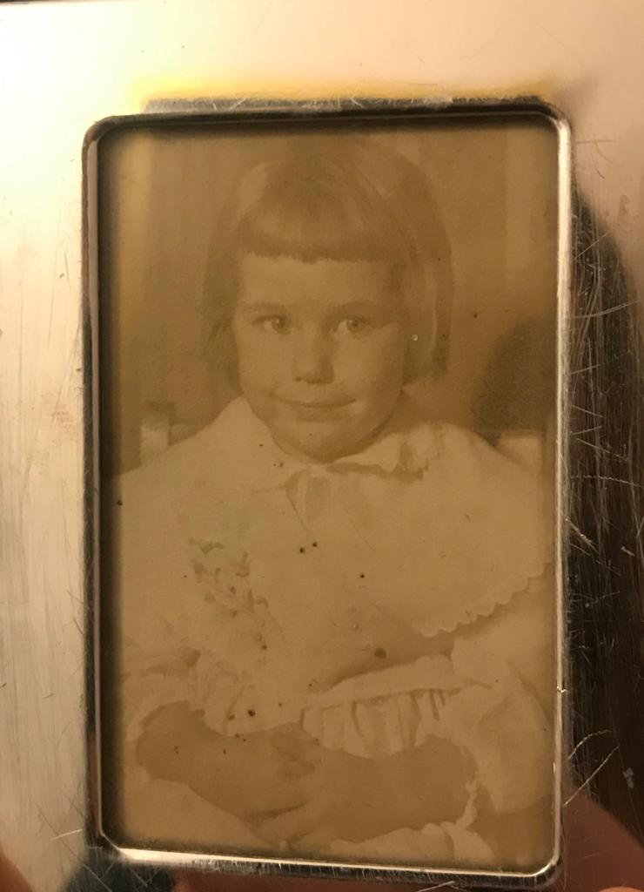

New York 1947 (geboren)
Connecticut 1979-1982 Sociale redenen
Jamaica 1982-1983 Sociale redenen, voor nieuw cultuur
Connecticut 1983-1994 Sociale redenen
Italie 1995-1996 Sociale redenen
Connecticut 1996-2015 Sociale redenen
Californië 2015-2020 Sociale redenen 